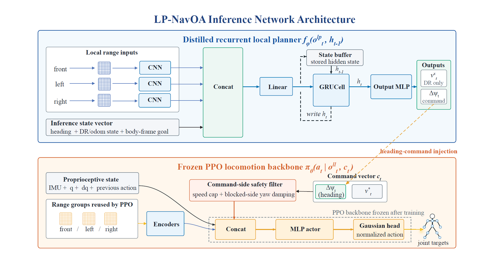
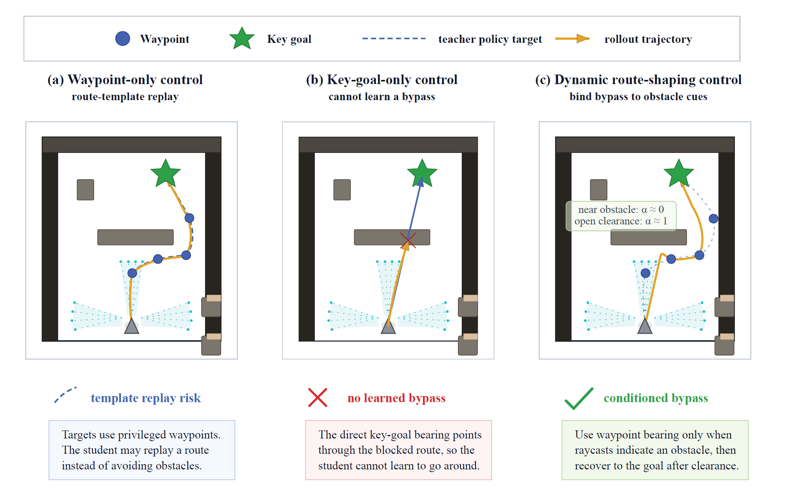
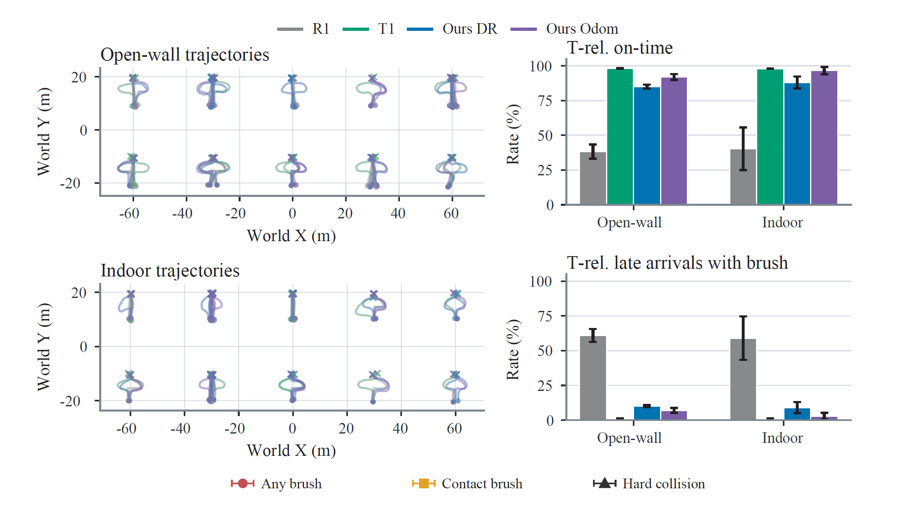
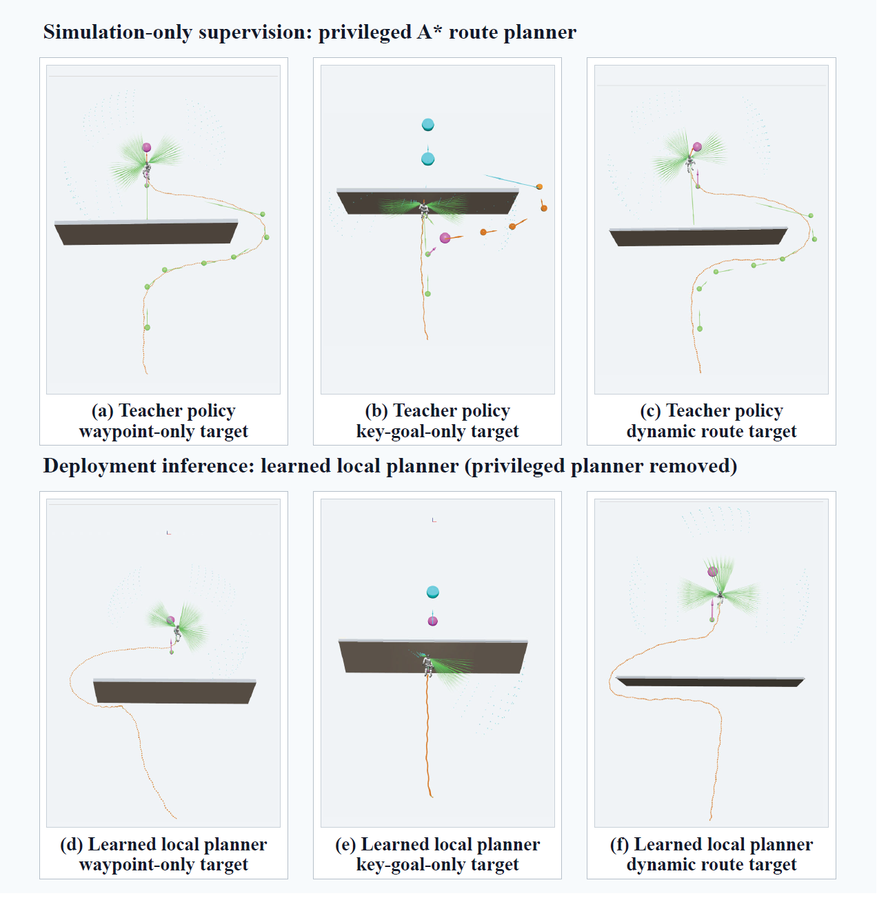
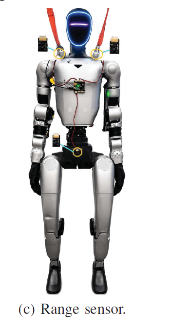

Single frontal panel at 0.5 m/s
Evaluation of the single-obstacle setting at a commanded speed of 0.5 m/s.
Learning to bypass obstacles and recover the goal from short-range sensing, goal direction, and temporal memory.
01 / Method
Three CNNs encode the front, left, and right range grids, then fuse them with heading, DR / odometry state, and the body-frame goal. A GRU retains short-horizon memory and overwrites only the heading command. The frozen PPO backbone receives the command through a shared safety filter and generates whole-body joint targets. Deployment requires neither a global map nor the privileged A* planner.

02 / Teacher supervision
Waypoint-only supervision can teach the student to replay a route template, while key-goal-only supervision can point directly into an obstacle. Dynamic route shaping blends the two bearings using range clearance: near blockage, α approaches 0 and favors the bypass waypoint; after clearance opens, α approaches 1 and restores goal seeking. Waypoints and the gate are used during training, not supplied to the deployed student.

03 / Simulation evaluation
MuJoCo open-wall and indoor layouts compare R1 (reactive backbone only), OURS (DR, dead reckoning), and OURS (Odom, odometry) on the same frozen backbone. T1 uses privileged A* and serves as the teacher reference. The table below reports T-rel. on-time from paper Table II: arrival within a teacher-calibrated, route- and speed-normalized time budget, rather than completion before timeout alone.

| Method | Open wall | Indoor |
|---|---|---|
| R1 · Backbone only | 38.3 ± 5.2 | 40.3 ± 15.3 |
| OURS · DR | 85.1 ± 1.3 | 88.0 ± 4.3 |
| OURS · Odom | 91.9 ± 2.1 | 96.6 ± 2.6 |
In the indoor layout, Odom reduces contact brush from R1’s 76.5% to 4.9% (Table II). The paper’s “any brush” also includes sustained safety braking, so it does not exclusively measure physical contact.
04 / Ablation
The top row shows teacher rollouts with privileged A*; the bottom row shows learned inference after removing that planner. Columns compare waypoint-only, key-goal-only, and dynamic route targets. Dynamic shaping balances bypass and goal recovery, while key-goal-only supervision struggles to learn a bypass.

05 / Real-robot demonstrations
The deployed stack combines the range-conditioned backbone with an odometry-assisted local planner. Three 8 × 8 range grids facing front, left, and right provide local obstacle observations, with a configured range of 4 m and an update rate of 12 Hz.
The paper documents six successful executions across four static obstacle layouts at commanded speeds of 0.5–0.9 m/s. The seven recordings below include two views of the same slanted-panel run. These demonstrate deployment feasibility, not a repeated-trial success rate.

Evaluation of the single-obstacle setting at a commanded speed of 0.5 m/s.
Evaluation of the same single-obstacle setting at a commanded speed of 0.8 m/s.
Evaluation of the same single-obstacle setting at a commanded speed of 0.9 m/s.
Navigation through a non-uniform obstacle arrangement with partial blockage.
Bypass behavior with two obstacles placed in front of the initial heading.
Forward-facing view of the angled obstacle arrangement at 0.5 m/s.
Side-view recording of the same angled obstacle scenario at 0.5 m/s.